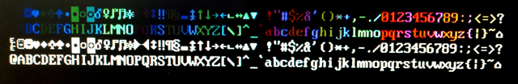

ECE 5760 Cornell University

Introduction
Nakano, K., et.al.(refs below) describe two versions of a small stack machine suitable for implementation on an FPGA and they give the Verilog source code on their web site. The design was ported to the DE2 board and extended to have a richer set of opcodes and i/o ports. I wrote a simple assembler and compiler for the architecture and implemented serial communication routines. The compiler supports inline macros, functions, one dimensional array variables, and the usual if-then-else-endif and while-do-endwhile structured programming. Supplied functions allow you to send and receive integers to the serial interface and to send strings and integers to the LCD.
The newest cpu and example hardware, example software, quartus archive, and compiler can be used to implement the multiprocessor shared-memory VGA graphics example below.
CPU
The cpu is a stack machine. The registers are arranged in a stack with the usual range of arithmetic operators and stack manipulation instructions. There are no named registers except top-of-stack (named top) and next-to-top-of-stack (named next).
The CPU design is from http://www.cs.hiroshima-u.ac.jp/~nakano/wiki/ and is GPL licensed. I added load/store opcodes and program counter push/pop. Load and store enable register indirect addressing, while PC manipulations enable functions. The single cycle version with a stack size of 16 occupies about 1100 logic elements (out of 33,000 on the DE2). Reducing the stack size to 8 drops the size to 940 logic elements. Setting QuartusII to optimize for speed (See Tools...Advisors...Timing optimization advisor) increases size to 1000 logic elements and increases the operating frequency to 74 MHz.
The cpu was extended to allow for up to eight in/out ports, with four appearing outside the cpu module. I/O addressing is shown in the opcode table below. The remaining four will be used for internal i/o, perhaps with a timer peripheral. The architecture taken from Nakano, K., et.al is shown below, but modified for 8 i/o ports and with an extra connection from the PC to the data bus (dbus).

CPU opcodes and instruction format
The cpu instruction set is shown below. Notation:
I is a 12-bit signed integerA is an unsigned 12-bit integern is a 3 bit integer (used only as an i/o address)top is top-of-stacknext is second-to-top-of-stackPC is the program countermem[A] is the contents of memory location A.| Instruction | Hex format | Operation |
|---|---|---|
nop |
0000 |
none |
pushi |
1000 + I |
[sign extended] I → top |
push A |
2000 + A |
mem[A] → top |
pop A |
3000 + A |
top →mem[A] |
jmp A |
4000 + A |
A → PC |
jz A |
5000 + A |
if (top==0) then A → PC |
jnz A |
6000 + A |
if (top!=0) then A → PC |
ld |
7000 |
mem[top] → top |
st |
8000 |
top → mem[next] |
pushpc |
9000 |
program counter → top |
poppc |
9001 |
top → program counter |
in n |
d00n |
input[n] → top |
out n |
e00n |
top → output[n] |
add |
f000 |
next + top → top |
sub |
f001 |
next - top → top |
mul |
f002 |
next * top → top (integer) |
mfix |
f015 |
next * top → top (in 10.8 fixed point) |
shl |
f003 |
next << top → top |
shr |
f004 |
next >> top → top |
asr |
f014 |
next >>> top → top (sign extended shift right) |
band |
f005 |
next & top → top |
bor |
f006 |
next | top → top |
bxor |
f007 |
next ^ top → top |
and |
f008 |
next && top → top |
or |
f009 |
next || top → top |
eq |
f00a |
next == top → top |
ne |
f00b |
next != top → top |
ge |
f00c |
next >= top → top |
le |
f00d |
next <= top → top |
gt |
f00e |
next > top → top |
lt |
f00f |
next < top → top |
neg |
f010 |
-top → top |
bnot |
f011 |
~top → top |
not |
f012 |
!top → top |
dup |
f013 |
copies top of stack -- stack: top → top top |
drop |
f017 |
drops top of stack-- stack: next top → next |
over |
f01f |
copies next to stack top -- stack: next top → next top next |
dnext |
f01b |
drops next -- stack: next top → top |
See this page for older versions and develpment sequence.
Simple Compiler (Syrup)
A simple compiler, named Syrup, was written in matlab (also runs in Octave) to make programming easier.
A source code is assembled into a mif file, which can be read by the ram block. The link between the mif file and the Pancake cpu ram block is implemented with a synthesis directive in the same statement as the memory declaration and before the semicolon which terminates the declaration.
reg [DWIDTH-1:0] mem [WORDS-1:0] /* synthesis ram_init_file = " test_stack_machine.mif" */ ;Search for
/* synthesis ram_init_file in the verilog file containing the cpu and modify the mif name.
If you change the mif file by recompiling (but keep the mif file name the same), then you can change the memory contents without having to rebuild the whole project:
(1) Click Update Memory Initialization File on the Processing menu.
(2) After using this option, run the QuartusII Assembler (Processing menu...Start...Start Assembler) to generate new programming files for the device.
The compiler_v1_15 syntax is stack based and written in Matlab (version 1.0, compiler_v1_12). A description follows:
constant keyword. constant
key3mask 8
; name -- value pair
redLEDs 3 ; port 3 variable keyword. variable
test ; define a 1 word variable
particle 100 ; define array of length 100 inline keyword. inline/endinline. inline
inc
1 add
endinline function keyword. function
getchar
putchar
delay_10
puthex program keyword. Example:program ; this section contains the actual program main: 0 =count ; loop forever waiting for human input while forever ; never exit do "enter> putstr gethex crlf puthex space count puthex crlf count 1 add =count endwhile ; end of infinite loop
main: . redLEDs key3mask add =test puts the value 11 into the variable test. var1[var2] treats var2 as an index into var1 and places the value of the indexed variable on the stack. =var or =var1[var2] stores the value on the stack to the appropriate location. count by pushing the memory value onto the stack, pushing 1 onto the stack, adding them, and popping the stack back into memory.count 1 add =count
add, sub, mul, mfix, shl, shr, asr, band, bor, bxor,
and, or, eq, ne, ge, le, gt , lt, neg , bnot , not, drop, over. "string places the string on the stack (with a character count) to be printed by putstr (see below). "enter> places the characters enter> on the stack with the e at next-to-top of stack and the character count at top-of-stack..putstr. in[const] and out[const].redLEDs defined above out[redLEDs]funct_entry: funct_entry. The exit point of a called function is indicated by return. inline make_vga_addr
8 shr 9 shl =temp
8 shr temp add
endinliney[count] x[count] make_vga_addr out[vga_addr] if then else endif. if x[count] 480 gt
then 478 =x[count]
endifwhile do endwhile. counter2 to zero and increments the counter until it overflows.while counter2 0 ne
do counter2 1 add =counter2
endwhile opcode.operand or opcode. if there is no operand.
inline swap
pop.4 ; locs 4&5 are hidden temp locations
pop.5
push.4
push.5
endinlineThe compiler generates code to initialize the return stack and then jumps to main.
Code starts executing at memory location zero, but your program starts at main:.
The return stack is allocated in high memory, with variables just below. There is no collision detection between code and variables.
Note that the parser is really stupid! No are spaces allowed between equal sign and variable name. No spaces allowed in indexed variable syntax.
Compiler wish list: Local variables, nested inlines, "include", variable/array initialization
Compiler Example
A short example shows how to blink LEDs. It shows the five basic sections of a program:
; This program demos compiler ; with LED output and button input ; ================================== constant ; named constants key3mask 8 key2mask 4 keys 1 ; port 1 keymask 15 ; 0x0f pattern2 255 ; 0xff pattern3 15 ; 0x0f redLEDs 3 ; port 3 greenLEDs 2 ; port 2 forever 1 ; endless loop ; ================================== variable test ; location to push test data counter1 ; outer loop counter counter2 ; inner loop counter ; ================================== inline inc 1 add endinline ; ================================ function evalkey ; ================================= program ; this section contains the actual program main: 0 out[greenLEDs]; reset the green LEDs 0 =counter1 ; init counter while forever ; never exit do counter1 inc ; get the counter and increment dup ; copy stack top out[redLEDs] ;output one copy, one on stack to store =counter1 ; save the counter ;slow it down with an inner loop counter 1 =counter2 ; reset and store inner counter while counter2 0 ne ; compare stack top to zero do counter2 inc =counter2 ; inc the counter endwhile ;end of inner loop ; detect some button presses if ; is KEY[3] pressed? key3mask evalkey ; detect 4th bit set then ; key 3 is pressed pushi.pattern2 out.greenLEDs else ; key 3 is not pressed pushpc. out[greenLEDs] endif endwhile ; end of outer loop ;=== read keys function ==== ; enter with a switch selector bit on the stack ; exits with a TRUE/FALSE for match/nomatch on stack evalkey: in[keys] bnot ; invert so key-down==1 keymask band ; use only lower 4 bits eq ; compare to specific_keymask return ;===end of code ============================
Multiprocessor graphics
Three fast processors were hooked up to SRAM to control the VGA. A hardware SRAM memory multiplexer was built to give priority to reset, then to the VGA controller, then each of the three cpus. The source code has to signal that it wants SRAM access, then wait for SRAM available, then read/write and then signal completion. SRAM access is interleaved between the VGA controller and the three cpus. The VGA controller gets access on every VGA clock high, while the cpus share every VGA clock low. This works becuase memory is being clocked twice as fast as the VGA clock. On every VGA clock high, an address is set up based on the VGA address generator. On the VGA clock low, the SRAM data for the VGA is buffered into a register, while the address for the cpu read/write is set up. On the next VGA clock high, the SRAM data is buffered into a register for each cpu, while the next VGA controller read is set up. Execution time for the code speeds up by a factor of five for 1200 particles on each cpu producing an aggregate of around 32,000 particles
A ROM character generator for VGA was built, based on the data from ECE 320 at BYU. The file from BYU is here, and the matlab program to convert it to an Altera mif file is here, and the mif file is here. The ascii character code is multiplied by 16 to from the base index for a character. The data at the base index location is the top byte (of 16) of the character image. The high order bit of the byte is the left-most pixel of the top line of the character. The ROM was connected to i/o ports on the stack processor, cpu 1, where a small routine reads the ROM and outputs colors to the VGA SRAM interface.

Multiprocessor data sharing
The SRAM interface to the VGA display actually has over 100,000 unused bytes which are not displayed, but the unused memory is in small chunks. The biggest piece of available memory is from address 246,400 to 262,144, or about 16 kbytes. These unused locations can be used to share non-graphics data between processors. We need 16-bit read/write functions and a mutex to lock memory. The SRAM switch used in the graphics functions above was extended with new functions to allow 16-bits to be written (the graphics interface writes only single bytes). The mutex is implemented using hardware test-and-set, clear, and read instructions. The hardware switch prioritizes memory access first, then mutex operations. On the processor side, the program must: (1) set up an sram read, write, or mutex operation, (2) assert a request, (3) wait for access achnowledgment, (4) do the read/write (5) de-assert request. The test program computes a diffusion-limited aggregation, as above, maintains a shared (mutex protected) count in sram, and maintains a shared run/done flag in sram. (hardware, software, archived project). And a video of the aggregate growth. The image below shows two counters in the upper left. The green counter is from shared, mutex protected memory. The red counter from shared, unprotected memory. The unprotected count is almost always lower than the protected count because of rare (but inevitable) overlap of two cpus trying to update the count at the same time. Another set of mutexes guarantees that cpu 2 and 3 will finish before cpu 1 tries to print the final count. It does this by setting a lock for cpu 2/3, then having each cpu clear its lock when it finishes.

The processor interface to the memory switch uses several i/o ports:
The control word on out2 has the following format. The 4 request lines are mutually exclusive.
The seven functions to access shared memory/mutex are written as inline functions described in the table below. The test-and-set operation on a mutex is atomic. It is guaranteed that if two cpus both try to set a mutex at the same time, only one will succeed, and they both will agree which one has set it.
| function | input stack | output stack |
effect |
vga_point |
color y x (stack top) |
-- |
Draws a point on the VGA display at (x,y) |
vga_read |
y x |
color |
Reads the 8-bit color of a point on the VGA display. Color code is explained in the hardware. |
sram_write |
data addr |
-- |
Writes a 16 bit word to SRAM addr |
sram_read |
addr |
data |
Reads a 16 bit word from SRAM addr |
mutex_test_set |
mutex_number (0 to 7) |
mutex_state (before setting) |
Reads a mutex then sets it, if it is zero |
mutex_clear |
mutex_number (0 to 7) |
-- |
Clears a mutex to zero |
mutex_read |
mutex_number (0 to 7) |
mutex_state |
Reads a mutex state (1/0) |
References:
Nakano, K.; Ito, Y., Processor, Assembler, and Compiler Design Education Using an FPGA, Parallel and Distributed Systems, 2008. ICPADS '08. 14th IEEE International Conference on; 8-10 Dec. 2008 pages: 723 - 728 (Nakano, K.; Ito, Y.; Dept. of Inf. Eng., Hiroshima Univ., Higashi-Hiroshima, Japan)
Nakano, K.; Kawakami, K.; Shigemoto, K.; Kamada, Y.; Ito, Y. A Tiny Processing System for Education and Small Embedded Systems on the FPGAs, Embedded and Ubiquitous Computing, 2008. EUC '08. IEEE/IFIP International Conference, Dec. 2008 pages: 472 - 479
John S. Loomis, Digital Labs using the Altera DE2 Board, http://www.johnloomis.org/digitallab/, Electrical and Computer Engineering, University of Dayton, Dayton, OH 45469-0232
Copyright Cornell University
March 20, 2013
Bruce Land